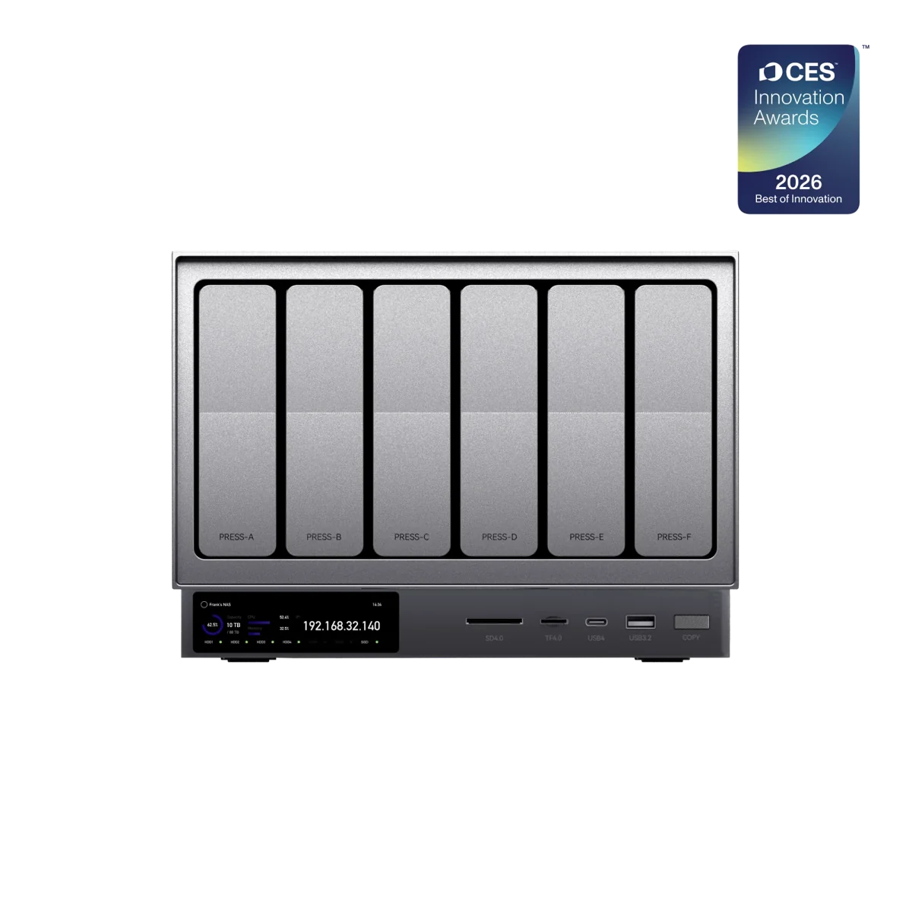

聊天、阅读时冒出的好问题
记一句想法，存一个链接，留住日常灵感

这是我的同事 · Memo
0%
我的执行工作，由它完成
一家 AI Native 公司的日常
1:1
员工 和 AI 同事
 人事
人事 研发
研发 市场
市场 运营
运营 内容
内容 物流
物流 财务
财务 投放
投放头像为示意
每个岗位都有 AI 配合执行；确认过的资料，由成员选择汇入 NAS，供团队按授权使用。


团队 NAS旧稿 · 来源 · 素材 · 复盘沿用员工介绍的协作架构 · 科普团队岗位示意 · 具体接入以配置为准
找得到旧稿、核查依据和素材出处，换人接手时也能知道当时为什么这样做。
接着做一期“本地大模型”，
上次的研究和素材还能用哪些？
可以先查这三份记录：
每条结果附原文件、版本或时间点，便于回查。
协作方式示意 · 不代表已检索到的真实文件
成员决定共享范围；新的专业判断和对外发布仍由人确认。
我们期待的长期协作
记住要求 · 持续配合 · 接受反馈 · 积累经验


AI 为什么会编造答案？
本地模型和云端有啥区别？
普通电脑也能跑吗？
↓
下期选题